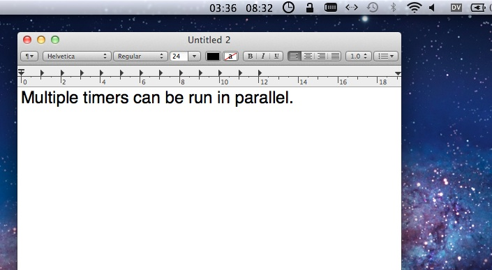
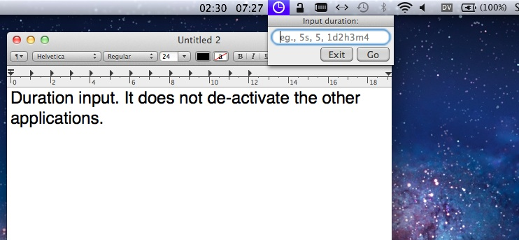
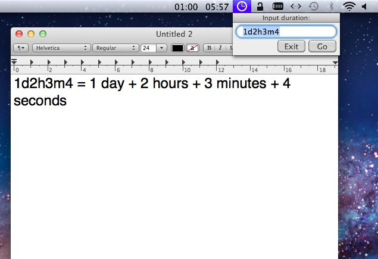
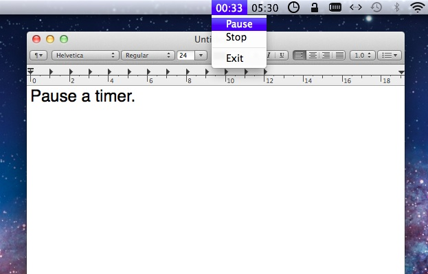
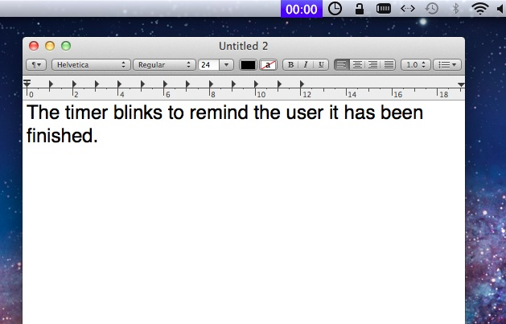

I made MenuBarTimer simply because I think a timer that appears as an isolated window is too heavy-weighted. I just want the timers reside on the status bar, without their own menu or docking icon, just like "Time-applet" in Gnome Desktop.
Just check it out, open with Xcode, compile it, then enjoy it.
BSD license.
Cheng Sheng (jeru.sheng@gmail.com)
Cheng Sheng (jeru.sheng@gmail.com)
You can download this project in either zip or tar formats.
You can also clone the project with Git by running:
$ git clone git://github.com/jeru/MenuBarTimer




